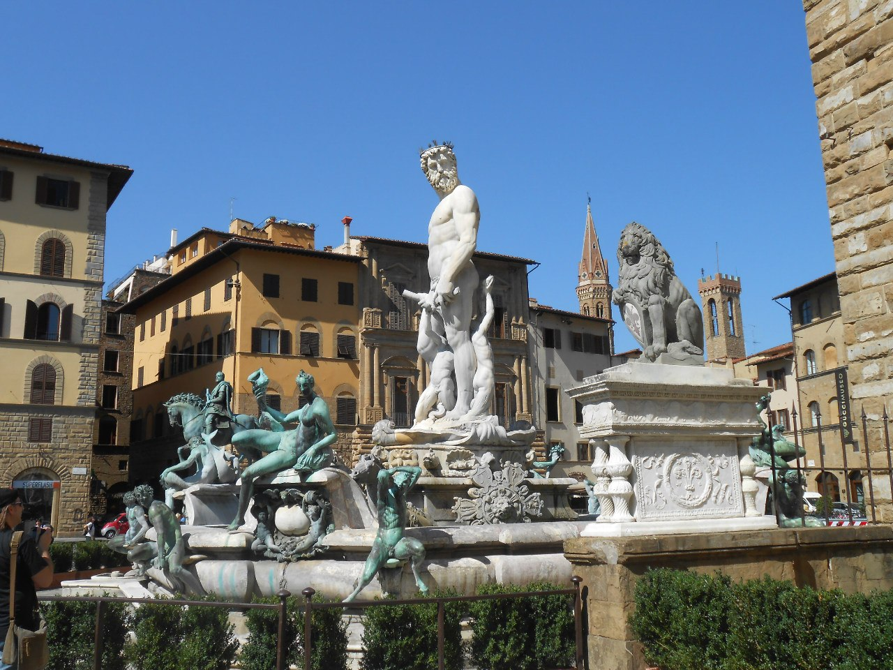

В 1339 году Флоренция стала первым городом Европы с мощёными улицами.
Сказочный персонаж – деревянный мальчик Пиноккио, у которого вырастал нос, когда он лгал, пришел из Флоренции.
Книга Le Avventure di Pinocchio впервые была напечатана флорентийцем Карло Лоренцини между 1881 и 1883 годом.
То, что мы называем итальянским языком, было сформировано Данте Алигьери в начале 14-го века: в своих работах,
получивших коллективное название «Божественная комедия», он смешал южные итальянские языки со своим родным флорентийским.
Именно таким образом диалект Флоренции послужил основой современного итальянского языка.
В самом центре города находится Санта-Мария-дель-Фьоре. Собор спроектирован так, что на момент открытия он мог вместить
в себя абсолютно всех жителей Флоренции. А купол собора в своё время стал инженерным шедевром. Это первый возведенный
каменный купол такого масштаба. Сейчас купол Санта-Мария-дель-Фьоре входит в обязательную программу обучения во всех
архитектурных вузах Италии.
Во Флоренции, недалеко от палаццо Питти, есть один весьма примечательный дом. На нем есть мемориальная табличка,
сообщающая, что Ф. М. Достоевский именно здесь написал свой знаменитый роман «Идиот».
«Врата рая» Баптистерия с библейскими сюжетами из десяти панелей являются точными копиями. Они были заменены после потопа.
А ещё копия дверей «Врата рая» установлена в Казанском соборе в Санкт-Петербурге.
В знаменитом соборе Дуомо 463 каменных ступени. Если Вы наберётесь терпения и всё-таки взберётесь наверх, Вам удастся получше
разглядеть главную роспись собора – Страшный суд, и насладиться самым невероятным видом на город.
Также Флоренция славится тем, что жители этого города говорят на самом чистом итальянском языке.
Поэтому она очень популярна среди лиц, изучающих итальянский.

Треть ценностей всемирного искусства, согласно данным всемирной организации ЮНЕСКО, накоплена именно во Флоренции.
С апреля по октябрь, туристов во Флоренции больше, чем местного населения.
Фонтан Нептуна на площади Синьории флорентийцы откровенно недолюбливают и называют Biancone,
что означает «большая белая некрасивая штуковина».
В церкви Санта Кроче сразу у входа слева есть надгробие знакомое многим по форме. Именно с данной фигуры была снята
парижская копия, которая позже была избрана Америкой для своего национального символа – статуи Свободы.
Собор Санта-Мария-дель-Фьоре является вторым по величине собором в Италии после собора Святого Петра в Риме.
Его строили более 140 лет и это одно из самых красивых строений на Земле.
Тоскана и её центр Флоренция стала первым современным Европейским государством, которое отказалось от пыток и смертной казни.
На территории Флоренции располагается большое количество разнообразных галерей, выставочных залов и музеев. Например, музей-галерея
Уффици имеет более полутора миллионов посетителей в год, и считается самым посещаемым музеем в Италии.
Пианино тоже родом из Флоренции.
Во Флоренции часто бывает так, что одна и та же улица в начале и в конце может носить разное название.
Из-за нехватки мрамора широкая мышца спины статуи Давида передана неточно. Эта же неточность отображена и на копии,
которая находится на площади Синьории.